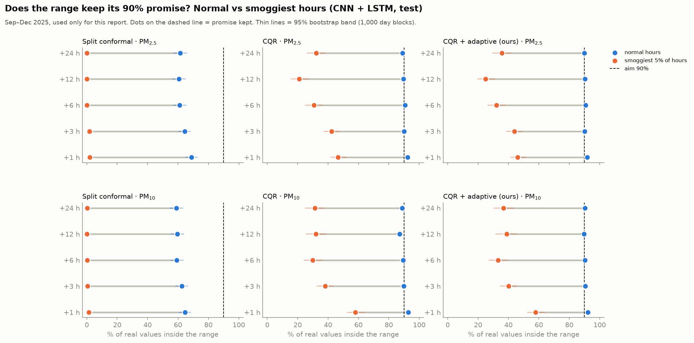
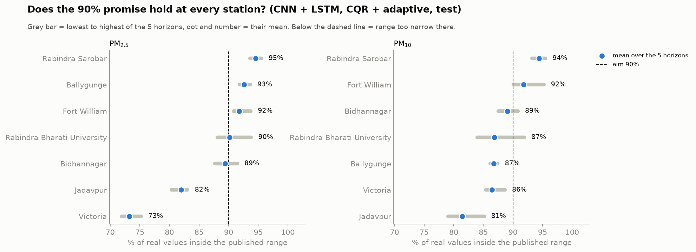
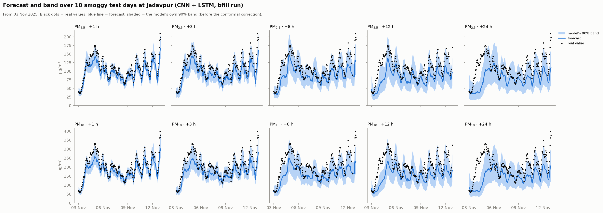
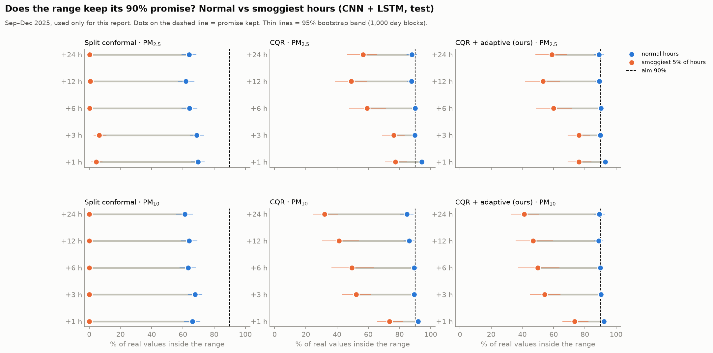
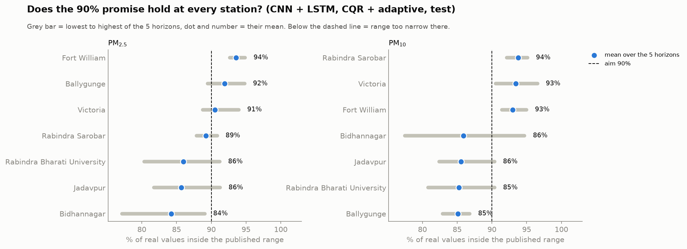
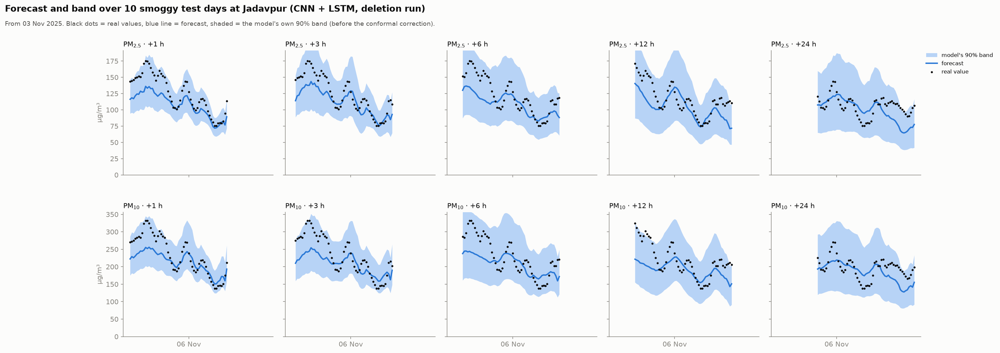
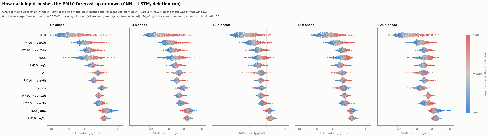

Recent plots
211 charts from the November 2026 update, grouped by folder (runs/<imputation run>/<model>). Click a chart to open it full size. Home · Flowchart
summary (all runs)
runs/bfill
runs/bfill/cnn
runs/bfill/cnn_lstm

runs/bfill/cnn_lstm/modern_coverage.pngruns/bfill/cnn_lstm/modern_scatter.png
runs/bfill/cnn_lstm/modern_station_coverage.png
runs/bfill/cnn_lstm/modern_week.pngruns/bfill/gru
runs/bfill/lstm
runs/bfill/tft
runs/deletion
runs/deletion/cnn
runs/deletion/cnn_lstm

runs/deletion/cnn_lstm/modern_coverage.pngruns/deletion/cnn_lstm/modern_scatter.png
runs/deletion/cnn_lstm/modern_station_coverage.png
runs/deletion/cnn_lstm/modern_week.png
runs/deletion/cnn_lstm/shap_beeswarm_pm10.pngruns/deletion/cnn_lstm/shap_beeswarm_pm25.pngruns/deletion/cnn_lstm/shap_correlation.pngruns/deletion/cnn_lstm/shap_importance.pngruns/deletion/cnn_lstm/shap_share.pngruns/deletion/gru
runs/deletion/gru/modern_coverage.pngruns/deletion/gru/modern_scatter.pngruns/deletion/gru/modern_station_coverage.pngruns/deletion/gru/modern_week.pngruns/deletion/gru/shap_beeswarm_pm10.pngruns/deletion/gru/shap_beeswarm_pm25.pngruns/deletion/gru/shap_correlation.pngruns/deletion/gru/shap_importance.pngruns/deletion/gru/shap_share.png runs/deletion/lstm
runs/deletion/lstm/modern_coverage.pngruns/deletion/lstm/modern_scatter.pngruns/deletion/lstm/modern_station_coverage.pngruns/deletion/lstm/modern_week.pngruns/deletion/lstm/shap_beeswarm_pm10.pngruns/deletion/lstm/shap_beeswarm_pm25.pngruns/deletion/lstm/shap_correlation.pngruns/deletion/lstm/shap_importance.pngruns/deletion/lstm/shap_share.png runs/deletion/tft
runs/deletion/tft/modern_coverage.pngruns/deletion/tft/modern_scatter.pngruns/deletion/tft/modern_station_coverage.pngruns/deletion/tft/modern_week.pngruns/deletion/tft/shap_beeswarm_pm10.pngruns/deletion/tft/shap_beeswarm_pm25.pngruns/deletion/tft/shap_correlation.pngruns/deletion/tft/shap_importance.pngruns/deletion/tft/shap_share.png runs/ffill
runs/ffill/forecast_r2.png runs/ffill/modern_coverage.pngruns/ffill/modern_error_boxes.pngruns/ffill/modern_flags.pngruns/ffill/modern_scatter.png
runs/ffill/modern_coverage.pngruns/ffill/modern_error_boxes.pngruns/ffill/modern_flags.pngruns/ffill/modern_scatter.png runs/ffill/modern_station_coverage.png
runs/ffill/modern_station_coverage.png runs/ffill/modern_week.pngruns/ffill/shap_beeswarm_pm10.pngruns/ffill/shap_beeswarm_pm25.pngruns/ffill/shap_correlation.pngruns/ffill/shap_importance.pngruns/ffill/shap_share.png
runs/ffill/modern_week.pngruns/ffill/shap_beeswarm_pm10.pngruns/ffill/shap_beeswarm_pm25.pngruns/ffill/shap_correlation.pngruns/ffill/shap_importance.pngruns/ffill/shap_share.png runs/ffill/cnn
runs/ffill/cnn/modern_coverage.pngruns/ffill/cnn/modern_scatter.pngruns/ffill/cnn/modern_station_coverage.pngruns/ffill/cnn/modern_week.pngruns/ffill/cnn/shap_beeswarm_pm10.pngruns/ffill/cnn/shap_beeswarm_pm25.pngruns/ffill/cnn/shap_correlation.pngruns/ffill/cnn/shap_importance.pngruns/ffill/cnn/shap_share.png runs/ffill/cnn_lstm
runs/ffill/cnn_lstm/modern_coverage.pngruns/ffill/cnn_lstm/modern_scatter.pngruns/ffill/cnn_lstm/modern_station_coverage.pngruns/ffill/cnn_lstm/modern_week.png runs/ffill/gru
runs/ffill/gru/modern_coverage.png runs/ffill/gru/modern_scatter.pngruns/ffill/gru/modern_station_coverage.pngruns/ffill/gru/modern_week.png
runs/ffill/gru/modern_scatter.pngruns/ffill/gru/modern_station_coverage.pngruns/ffill/gru/modern_week.png runs/ffill/lstm
runs/ffill/lstm/modern_coverage.pngruns/ffill/lstm/modern_scatter.pngruns/ffill/lstm/modern_station_coverage.pngruns/ffill/lstm/modern_week.png runs/ffill/tft
runs/ffill/tft/modern_coverage.pngruns/ffill/tft/modern_scatter.pngruns/ffill/tft/modern_station_coverage.pngruns/ffill/tft/modern_week.png runs/knn
runs/knn/forecast_r2.pngruns/knn/modern_error_boxes.pngruns/knn/modern_flags.png runs/knn/cnn
runs/knn/cnn/modern_coverage.pngruns/knn/cnn/modern_scatter.pngruns/knn/cnn/modern_station_coverage.pngruns/knn/cnn/modern_week.png runs/knn/cnn_lstm
runs/knn/cnn_lstm/modern_coverage.pngruns/knn/cnn_lstm/modern_scatter.pngruns/knn/cnn_lstm/modern_station_coverage.pngruns/knn/cnn_lstm/modern_week.png runs/knn/gru
runs/knn/gru/modern_coverage.pngruns/knn/gru/modern_scatter.pngruns/knn/gru/modern_station_coverage.pngruns/knn/gru/modern_week.png runs/knn/lstm
runs/knn/lstm/modern_coverage.pngruns/knn/lstm/modern_scatter.pngruns/knn/lstm/modern_station_coverage.pngruns/knn/lstm/modern_week.png runs/knn/tft
runs/knn/tft/modern_coverage.pngruns/knn/tft/modern_scatter.pngruns/knn/tft/modern_station_coverage.pngruns/knn/tft/modern_week.png runs/median
runs/median/forecast_r2.pngruns/median/modern_error_boxes.pngruns/median/modern_flags.png runs/median/cnn
runs/median/cnn/modern_coverage.pngruns/median/cnn/modern_scatter.pngruns/median/cnn/modern_station_coverage.pngruns/median/cnn/modern_week.pngruns/median/cnn/shap_beeswarm_pm10.pngruns/median/cnn/shap_beeswarm_pm25.pngruns/median/cnn/shap_correlation.pngruns/median/cnn/shap_importance.pngruns/median/cnn/shap_share.png runs/median/cnn_lstm
runs/median/cnn_lstm/modern_coverage.pngruns/median/cnn_lstm/modern_scatter.pngruns/median/cnn_lstm/modern_station_coverage.pngruns/median/cnn_lstm/modern_week.pngruns/median/cnn_lstm/shap_beeswarm_pm10.pngruns/median/cnn_lstm/shap_beeswarm_pm25.pngruns/median/cnn_lstm/shap_correlation.pngruns/median/cnn_lstm/shap_importance.pngruns/median/cnn_lstm/shap_share.png runs/median/gru
runs/median/gru/modern_coverage.pngruns/median/gru/modern_scatter.pngruns/median/gru/modern_station_coverage.pngruns/median/gru/modern_week.pngruns/median/gru/shap_beeswarm_pm10.pngruns/median/gru/shap_beeswarm_pm25.pngruns/median/gru/shap_correlation.pngruns/median/gru/shap_importance.pngruns/median/gru/shap_share.png runs/median/lstm
runs/median/lstm/modern_coverage.pngruns/median/lstm/modern_scatter.pngruns/median/lstm/modern_station_coverage.pngruns/median/lstm/modern_week.pngruns/median/lstm/shap_beeswarm_pm10.pngruns/median/lstm/shap_beeswarm_pm25.pngruns/median/lstm/shap_correlation.pngruns/median/lstm/shap_importance.pngruns/median/lstm/shap_share.png runs/median/tft
runs/median/tft/modern_coverage.pngruns/median/tft/modern_scatter.pngruns/median/tft/modern_station_coverage.pngruns/median/tft/modern_week.png runs/mice
runs/mice/forecast_r2.pngruns/mice/modern_error_boxes.pngruns/mice/modern_flags.png runs/mice/cnn
runs/mice/cnn/modern_coverage.pngruns/mice/cnn/modern_scatter.pngruns/mice/cnn/modern_station_coverage.pngruns/mice/cnn/modern_week.png runs/mice/cnn_lstm
runs/mice/cnn_lstm/modern_coverage.pngruns/mice/cnn_lstm/modern_scatter.pngruns/mice/cnn_lstm/modern_station_coverage.pngruns/mice/cnn_lstm/modern_week.png runs/mice/gru
runs/mice/gru/modern_coverage.pngruns/mice/gru/modern_scatter.pngruns/mice/gru/modern_station_coverage.pngruns/mice/gru/modern_week.png runs/mice/lstm
runs/mice/lstm/modern_coverage.pngruns/mice/lstm/modern_scatter.pngruns/mice/lstm/modern_station_coverage.pngruns/mice/lstm/modern_week.png runs/mice/tft
runs/mice/tft/modern_coverage.pngruns/mice/tft/modern_scatter.pngruns/mice/tft/modern_station_coverage.pngruns/mice/tft/modern_week.png